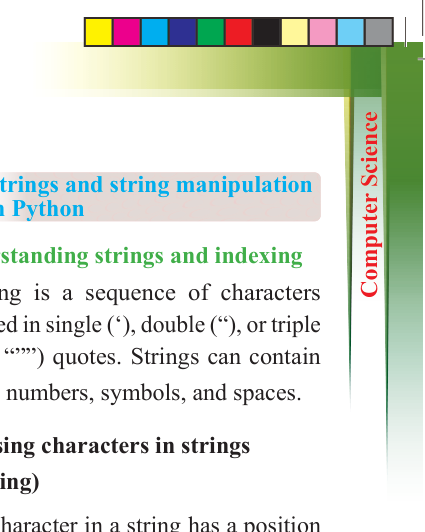
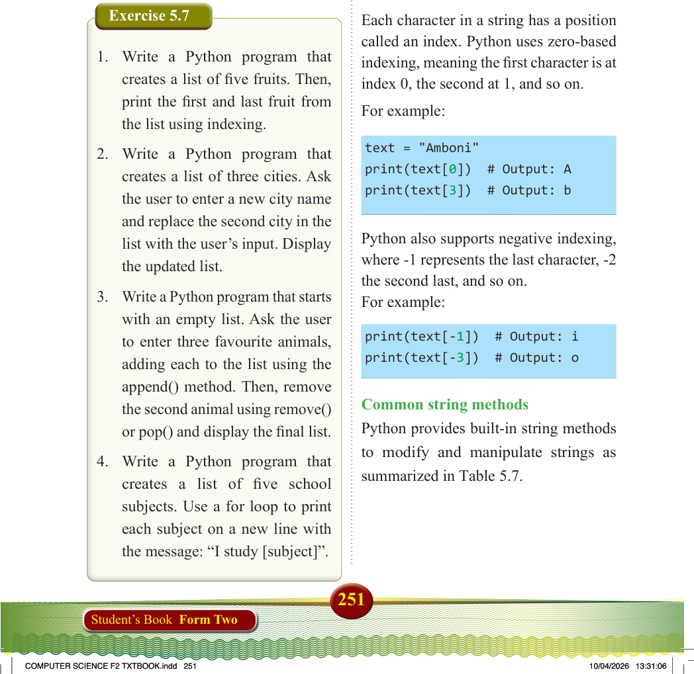
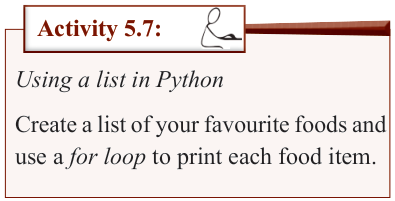
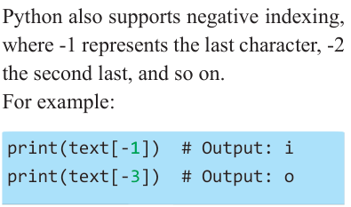

251
Student’s Book Form Two
In this example, the loop goes through
each item in the lakes list and prints it.

Activity 5.7:
Using a list in Python
Create a list of your favourite foods and
use a for loop to print each food item.
Exercise 5.7
1. Write a Python program that creates a list of five fruits. Then,
print the first and last fruit from
the list using indexing.
2. Write a Python program that
creates a list of three cities. Ask
the user to enter a new city name and replace the second city in the list with the user’s input. Display the updated list.
3. Write a Python program that starts
with an empty list. Ask the user
to enter three favourite animals,
adding each to the list using the
append() method. Then, remove
the second animal using remove()
or pop() and display the final list.
4. Write a Python program that
creates a list of five school
subjects. Use a for loop to print
each subject on a new line with
the message: “I study [subject]”.
Strings and string manipulation in Python
Understanding strings and indexing
A string is a sequence of characters
enclosed in single (‘), double (“), or triple
(‘’’ or “””) quotes. Strings can contain
letters, numbers, symbols, and spaces.
Accessing characters in strings
(indexing)
Each character in a string has a position called an index. Python uses zero-based
indexing, meaning the first character is at
index 0, the second at 1, and so on.
For example:
text = "Amboni" print(text[0]) # Output: A print(text[3]) # Output: b
Python also supports negative indexing, where -1 represents the last character, -2 the second last, and so on.
For example:

print(text[-1]) # Output: i print(text[-3]) # Output: o
Common string methods
Python provides built-in string methods
to modify and manipulate strings as
summarized in Table 5.7.